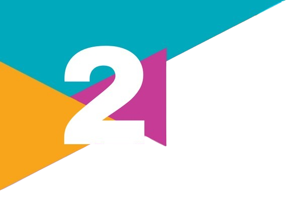

PORTAL SOCIOLOGIA
Um projeto de monitoria online
Buscar
UNIDADE 1
UNIDADE 2
UNIDADE 3
CAPÍTULOS
SLIDES
QUESTOES
ENEM
DOWNLOAD
Socio ia
SOCIO IA
Fechar
↑

UNIDADE 2
Nesta unidade, vamos conversar sobre grandes temas de nossas sociedades. Vivemos em uma sociedade capitalista. O que isso tem a ver conosco? Como sua família se insere no mundo do trabalho? Como você observa as desigualdades sociais no contexto em que vive? E as grandes questões atuais, como a ambiental, a democracia, a cidadania e os movimentos sociais, já parou para pensar sobre elas? Por fim, vamos conversar a respeito de uma nova realidade presente na sua geração e que não existia na geração de jovens há alguns anos: o papel das mídias conjugadas com a inteligência artificial. Qual é a contribuição que a Sociologia pode oferecer para refletir sobre essa temática?
Unidade 2
Trabalho, política e sociedade
Capitalismo, globalização e neoliberalismo
Trabalho e desigualdades sociais
Capitalismo e a questão ambiental
Cidadania e direitos
Estado e democracia
Movimentos sociais
"Mídias e inteligência artificial